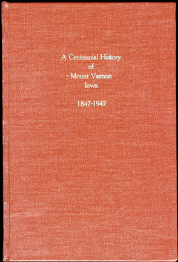
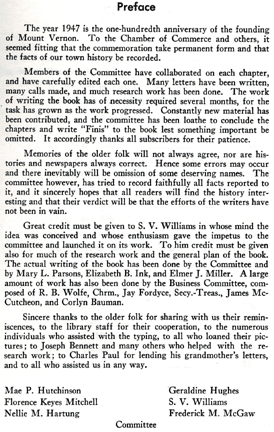

A Centennial History of Mount Vernon Iowa 1847-1947

This is a great book on Mount Vernon History and is Available to check out at the Cole Library and also to purchase from City Hall and the Visitor Center.
home